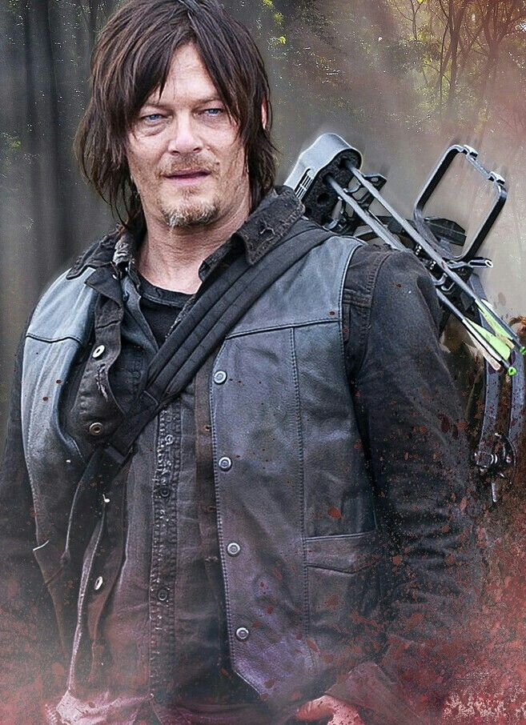

Em 2010, Reedus começou a interpretar o icônico personagem Daryl Dixon em The Walking Dead, um drama de terror sobre um grupo de amigos e familiares que lutam para sobreviver em um mundo apocalíptico violento povoado por zumbis e os poucos humanos sobreviventes.
Apesar de seu mau humor e volatilidade, ele é tolerado pelo grupo principal de sobreviventes devido às suas habilidades em caçar animais e à destemida eficiência em matar mortos-vivos. Isso é particularmente importante nos primeiros dias do apocalipse. Após o desaparecimento de Merle, Daryl deixa sua personalidade distante e começa a se relacionar com o grupo.
Aqui vai um pequeno video sobre sua performace na série!!
Algumas curiosidades sobre Darly Dixon
Daryl foi responsável pela morte de 3 pessoas do grupo original de Atlanta: Dale (ele atirou em sua cabeça para evitar que ele se transformasse em um walker), Glenn (após se revoltar com Negan pela morte de Abraham) e Morales (acertando uma flecha de sua arma porque ele estava apontando uma arma para Rick).
O que o pai do Daryl fez com ele? Will Dixon foi o pai de Daryl e Merle Dixon. Ele era um homem que estava sempre estava bêbado e que abusava de Merle e Daryl inúmeras vezes, batendo-os, depois que a mãe deles morreu em um incêndio.
Quando Daryl apareceu na série,ele tinha aproximadamente 40 anos. No final de The Walking Dead,ele tinha aproximadamente 50 anos.

BÔNUS: Daryl foi capturado oito vezes, sendo elas por: Woodbury, Gareth, Dwight, Salvadores, Jocelyn, Sussurradores, Leah e Ceifadores.